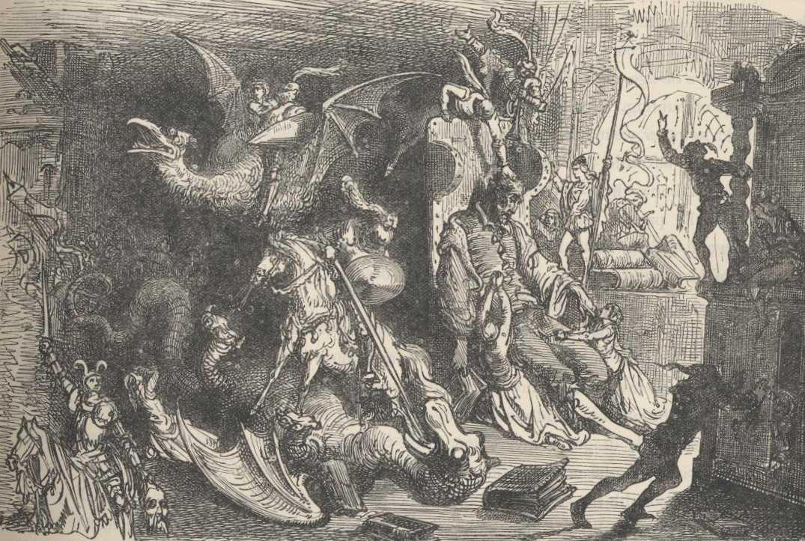

Hi guys, welcome to my home page!
Feel to look around at the landscape"
so nice and empty, like a desert, let's read don quixote
In a village of La Mancha, the name of which I have no desire to call to mind, there lived not long since one of those gentlemen that keep a lance in the lance-rack, an old buckler, a lean hack, and a greyhound for coursing.
An olla of rather more beef than mutton, a salad on most nights, scraps on Saturdays, lentils on Fridays, and a pigeon or so extra on Sundays, made away with three-quarters of his income.
The rest of it went in a doublet of fine cloth and velvet breeches and shoes to match for holidays, while on week-days he made a brave figure in his best homespun.
He had in his house a housekeeper past forty, a niece under twenty, and a lad for the field and market-place, who used to saddle the hack as well as handle the bill-hook.
The age of this gentleman of ours was bordering on fifty; he was of a hardy habit, spare, gaunt-featured, a very early riser and a great sportsman.
They will have it his surname was Quixada or Quesada (for here there is some difference of opinion among the authors who write on the subject), although from reasonable conjectures it seems plain that he was called Quexana.
This, however, is of but little importance to our tale; it will be enough not to stray a hair's breadth from the truth in the telling of it.

Once more, with gusto!
In a village of La Mancha, the name of which I have no desire to call to mind, there lived not long since one of those gentlemen that keep a lance in the lance-rack, an old buckler, a lean hack, and a greyhound for coursing.
An olla of rather more beef than mutton, a salad on most nights, scraps on Saturdays, lentils on Fridays, and a pigeon or so extra on Sundays, made away with three-quarters of his income.
The rest of it went in a doublet of fine cloth and velvet breeches and shoes to match for holidays, while on week-days he made a brave figure in his best homespun.
He had in his house a housekeeper past forty, a niece under twenty, and a lad for the field and market-place, who used to saddle the hack as well as handle the bill-hook.
The age of this gentleman of ours was bordering on fifty; he was of a hardy habit, spare, gaunt-featured, a very early riser and a great sportsman.
They will have it his surname was Quixada or Quesada (for here there is some difference of opinion among the authors who write on the subject), although from reasonable conjectures it seems plain that he was called Quexana.
My name is Yoshikage Kira. I'm 33 years old.
My house is in the northeast section of Morioh, where all the villas are, and I am not married.
I work as an employee for the Kame Yu department stores, and I get home every day by 8 PM at the latest.
I don't smoke, but I occasionally drink.
I'm in bed by 11 PM, and make sure I get eight hours of sleep, no matter what.
After having a glass of warm milk and doing about twenty minutes of stretches before going to bed, I usually have no problems sleeping until morning.
Just like a baby, I wake up without any fatigue or stress in the morning.
I was told there were no issues at my last check-up.
I'm trying to explain that I'm a person who wishes to live a very quiet life.
I take care not to trouble myself with any enemies, like winning and losing, that would cause me to lose sleep at night.
That is how I deal with society, and I know that is what brings me happiness.
Although, if I were to fight I wouldn't lose to anyone.